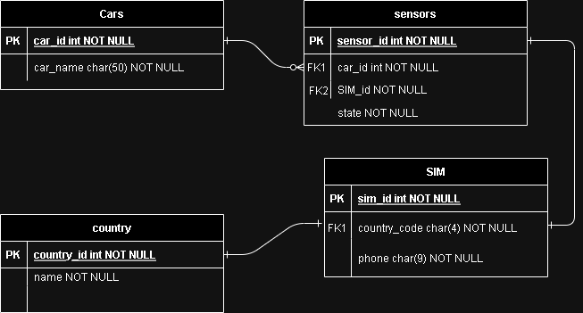
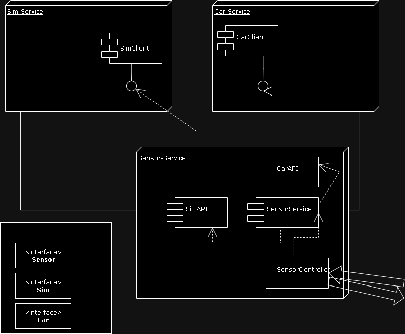
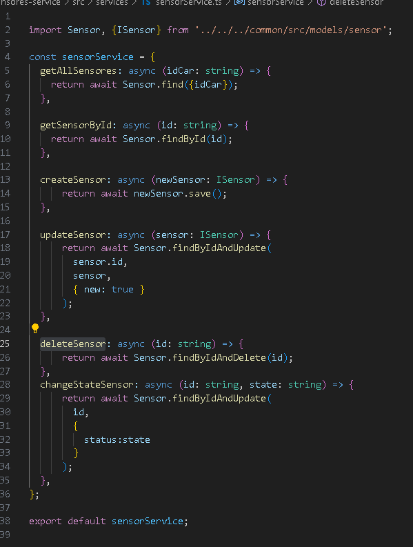
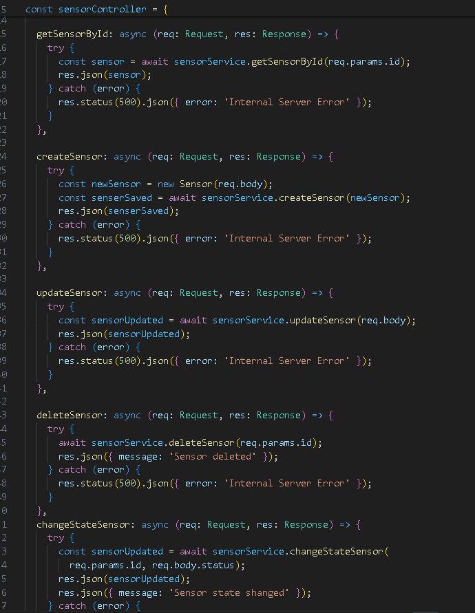
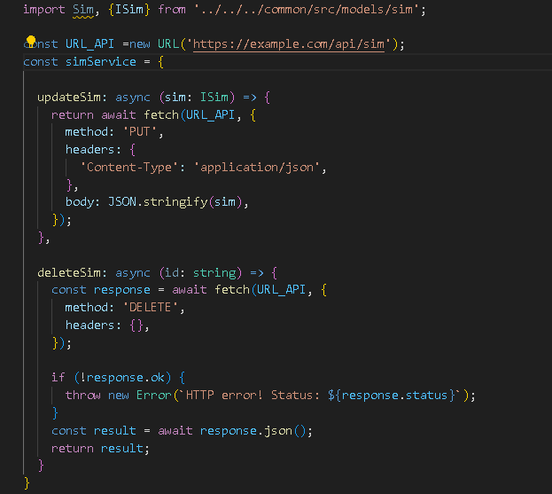
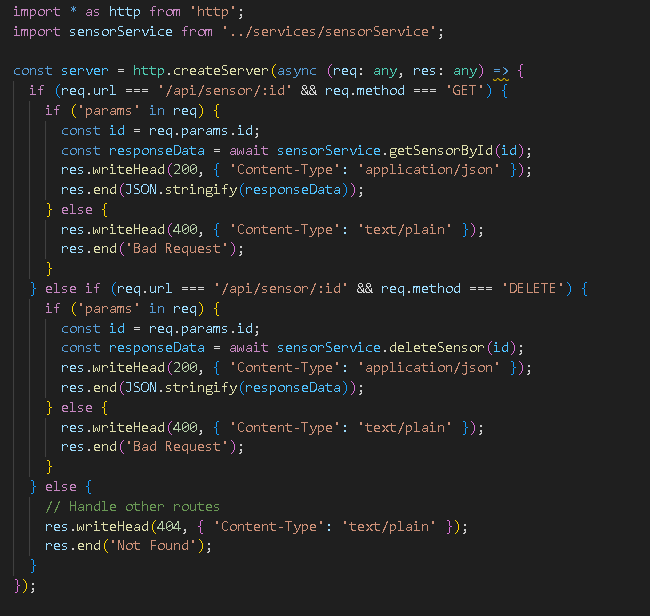

Design a High-Level Solution.
E/R Diagram (Database)
MicroService Scheme (Arquitecture)
Tecnologies
For this solution I usted
- NodeJS like appServer
- express to comunicate whit the app
- http library to clients in modules of microservices arquitecture
- fetch to apis in modules of microservices arquitecture
- jest for example unit test
- Typescript like programing language
- Mongo & moongose for persistence
- Reveal JS for this presentation
Component ARQ

Define the endpoints expose from the API (Manage Sim)
Sensor Service / Sensor Controller
 Define the endpoints expose from the API (Collect sensors)
Sim API / Sensor Client
 Questions
If you would need to add a monitoring system to this solution, what technologies would you use and what would you change?
I used tools like winston for generate logging and Elastic, witch read that logs and make a monitoring data screens
If we want to enable DevOps on this solution for testing, CI/CD, how would that change or implement your solution if at all?
Well i use docker for deployment in a testing server and jest for implement test unit and cypress for the test end to end
and all of it controled by githubacions or jenkins